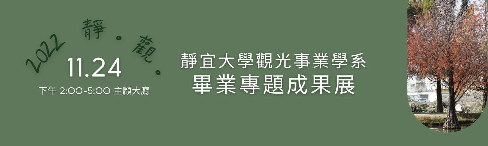
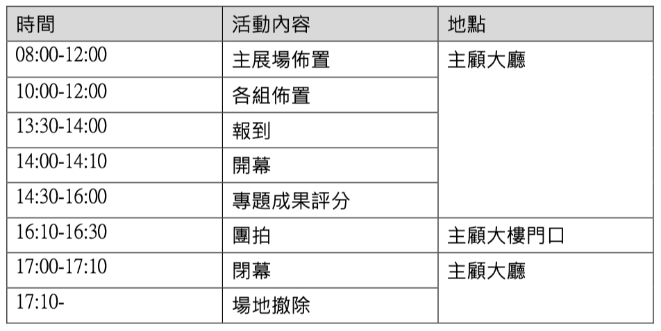

Q & A (老師版)
1.成果展當天的活動時程如何安排？
日期：2022/11/24
地點：主顧大廳
活動時程如下：

2.本屆主題是什麼？設計理念？
本屆主題：靜。觀。
宋‧程顥在其《秋日偶成》有云：萬物靜觀皆自得，四時佳興與人同。的確，世間萬物都有其美好的一面，只要細細品味，皆可發現其中之美。靜宜觀光系學生的作品也是如此，只要懂得欣賞，便能發現本系學生作品中的特色。
《靜。觀。》亦有靜宜觀光、靜態展（無現場喧囂活動安排）之意象。本屆主色以綠色系（中性色調）為主，抽象象徵為自然、新鮮、春天、年輕、環保、安全；以橙色系（暖色調）為輔，代表歡樂、活潑、成熟、活力、溫暖、積極。
活動舉辦在11月下旬，故現場輔以各觀光景點11月常見之落羽松為佈置元素做點綴，亦有推廣觀光之意。
3.論文組有桌子可展示作品嗎？
有的，將會於論文組專用的A型海報架旁提供桌子，方便展示。
4.學生作品海報需內含哪些內容？
本屆每個小組的海報統一都要放置下列資訊：
(1)「靜宜⼤學觀光事業學系 畢業專題」字樣。
(2)作品名稱。
(3)作者群名單。
(4)指導老師名單。
字型、字體大小則未做硬性規定。
5.學生作品海報列印規格？印刷費是否有補助？
本屆學生作品海報統一印製A1直式尺寸，印刷費需由各小組自行支付。
6.我指導的學生有人在國外實習、交換，無法返國，成果展怎麼處理？
因成果展視為期末考，為了公平性的考量，建議海外同學以視訊方式參與，不可缺席。
其詳細施行細節（例如幾點幾分連線？使用什麼軟體？要不要切視訊看到面孔？），由指導老師和當事人及小組成員決定之。
7.海外學生有時差問題，成果展如何處理？
原則上，海外的同學仍以視訊方式出席。若遠距出席有執行上的困難，需請指導老師將問題帶回系上會議做個案處理。
8.是否要請專題生準備投影片？
由於本屆採桌邊評分，並未安排專題生做正式簡報，惟各小組仍需於評審抵達時進行專題成果介紹。介紹的方式由指導老師與小組成員決定之，不一定要使用投影片，可採多元形式進行，例如實物展示、預錄展示輔以口頭說明、文案展示、現場實作展示等均為常見之方式。
9.系上邀請的6位評審是分組評?分幾組? 還是每位評審每組都要評?
本屆學生共35組，分為「作品創作」28組、「論文寫作」5組、「競賽參與」2組。依規劃，6位評審委員將分為三個評審小組，每組兩位評審老師。
另因本屆學生作品大多數集中在「作品創作」類別，策展小組將會試著在該類別內再區分出三個子類別，每個子類別由一個評審小組負責評分，其中有一個評審小組會負責全部競賽類與論文類。
每個評審小組最多負責12個專題作品。
10.有專題生說他11/24當天有課不能參加成果展，怎麼處理？
策展小組已於日前調查整理出11/24成果展當天有課的所有大四同學名單，並已統一由系辦公室送出公假申請，因此專題生不得以「有課」為由缺席成果展。惟公假是否准假，仍需由各授課老師決定。
11.當天有規定專題生服裝嗎？
原則上著正式服裝，但由指導老師與小組成員依專題屬性⾃⾏決定合宜穿著樣式。
工作人員穿著將由策展小組另訂之。
12.當天指導老師需要出席嗎？
邀請每位老師出席這個全系重要活動，細細品味系上學生畢業專題特色；若需請假，請向主任說明請假原因。
提醒老師：當天4:10拍團拍，請老師們一起參與，為所有專題生留下美好回憶。
13.指導老師的評分表何時繳交？
指導老師請自行抽空進行個別專題生成績評分作業，並請於12/5前完成。
靜宜大學觀光事業學系 版權所有。
王錦裕老師 製作、整理。
最後更新日期：2022/11/9
更新歷程：
2022/10/29教師版QA平台上線
2022/11/09修正QA編號9、新增QA編號12、13